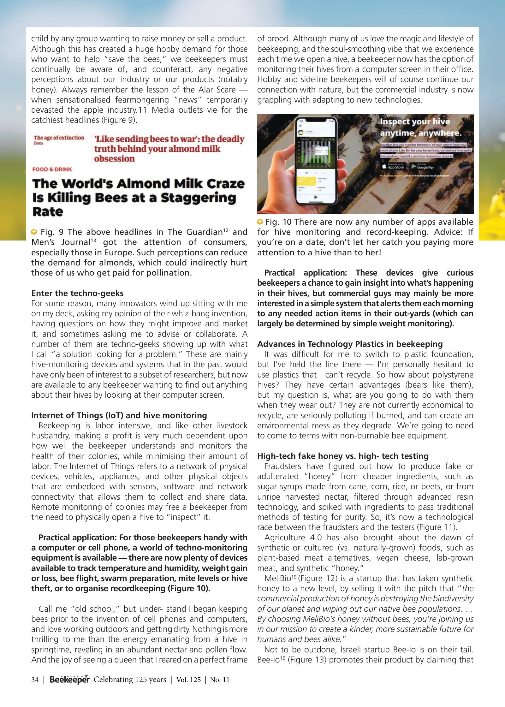

child by any group wanting to raise money or sell a product.
Although this has created a huge hobby demand for those
who want to help “save the bees,” we beekeepers must
continually be aware of, and counteract, any negative
perceptions about our industry or our products (notably
honey). Always remember the lesson of the Alar Scare —
when sensationalised fearmongering “news” temporarily
devasted the apple industry.11 Media outlets vie for the
catchiest headlines (Figure 9).
of brood. Although many of us love the magic and lifestyle of
beekeeping, and the soul-smoothing vibe that we experience
each time we open a hive, a beekeeper now has the option of
monitoring their hives from a computer screen in their office.
Hobby and sideline beekeepers will of course continue our
connection with nature, but the commercial industry is now
grappling with adapting to new technologies.
Enter the techno-geeks
For some reason, many innovators wind up sitting with me
on my deck, asking my opinion of their whiz-bang invention,
having questions on how they might improve and market
it, and sometimes asking me to advise or collaborate. A
number of them are techno-geeks showing up with what
I call “a solution looking for a problem.” These are mainly
hive-monitoring devices and systems that in the past would
have only been of interest to a subset of researchers, but now
are available to any beekeeper wanting to find out anything
about their hives by looking at their computer screen.
Internet of Things (IoT) and hive monitoring
Beekeeping is labor intensive, and like other livestock
husbandry, making a profit is very much dependent upon
how well the beekeeper understands and monitors the
health of their colonies, while minimising their amount of
labor. The Internet of Things refers to a network of physical
devices, vehicles, appliances, and other physical objects
that are embedded with sensors, software and network
connectivity that allows them to collect and share data.
Remote monitoring of colonies may free a beekeeper from
the need to physically open a hive to “inspect” it.
Practical application: For those beekeepers handy with
a computer or cell phone, a world of techno-monitoring
equipment is available — there are now plenty of devices
available to track temperature and humidity, weight gain
or loss, bee flight, swarm preparation, mite levels or hive
theft, or to organise recordkeeping (Figure 10).
Call me “old school,” but under- stand I began keeping
bees prior to the invention of cell phones and computers,
and love working outdoors and getting dirty. Nothing is more
thrilling to me than the energy emanating from a hive in
springtime, reveling in an abundant nectar and pollen flow.
And the joy of seeing a queen that I reared on a perfect frame
Fig. 9 The above headlines in The Guardian12 and
Men’s Journal13 got the attention of consumers,
especially those in Europe. Such perceptions can reduce
the demand for almonds, which could indirectly hurt
those of us who get paid for pollination.
Fig. 10 There are now any number of apps available
for hive monitoring and record-keeping. Advice: If
you’re on a date, don’t let her catch you paying more
attention to a hive than to her!
Practical application: These devices give curious
beekeepers a chance to gain insight into what’s happening
in their hives, but commercial guys may mainly be more
interested in a simple system that alerts them each morning
to any needed action items in their out-yards (which can
largely be determined by simple weight monitoring).
Advances in Technology Plastics in beekeeping
It was difficult for me to switch to plastic foundation,
but I’ve held the line there — I’m personally hesitant to
use plastics that I can’t recycle. So how about polystyrene
hives? They have certain advantages (bears like them),
but my question is, what are you going to do with them
when they wear out? They are not currently economical to
recycle, are seriously polluting if burned, and can create an
environmental mess as they degrade. We’re going to need
to come to terms with non-burnable bee equipment.
High-tech fake honey vs. high- tech testing
Fraudsters have figured out how to produce fake or
adulterated “honey” from cheaper ingredients, such as
sugar syrups made from cane, corn, rice, or beets, or from
unripe harvested nectar, filtered through advanced resin
technology, and spiked with ingredients to pass traditional
methods of testing for purity. So, it’s now a technological
race between the fraudsters and the testers (Figure 11).
Agriculture 4.0 has also brought about the dawn of
synthetic or cultured (vs. naturally-grown) foods, such as
plant-based meat alternatives, vegan cheese, lab-grown
meat, and synthetic “honey.”
MeliBio15 (Figure 12) is a startup that has taken synthetic
honey to a new level, by selling it with the pitch that “the
commercial production of honey is destroying the biodiversity
of our planet and wiping out our native bee populations. …
By choosing MeliBio’s honey without bees, you’re joining us
in our mission to create a kinder, more sustainable future for
humans and bees alike.”
Not to be outdone, Israeli startup Bee-io is on their tail.
Bee-io16 (Figure 13) promotes their product by claiming that
34 |
Celebrating 125 years | Vol. 125 | No. 11